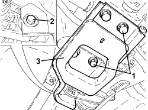

2720C84 REAR DIFFERENTIAL TO CROSSMEMBER MOUNTING BRACKET - R.R.
- Path
- Procedures > 27 AXLE > 2720 REAR AXLE CASING -SEMISHAFT AND DIFFERENTIAL > 2720C REAR DIFFERENTIAL UNIT > 2720C84 REAR DIFFERENTIAL TO CROSSMEMBER MOUNTING BRACKET - R.R.
- Kind
- repair procedure (removal / refitting; the operation number is the code)
- Applies to
- engines: 3.2 JTS; all production periods
- Interactive page
- https://sloeber94.github.io/elrnDB-aBrrSpdr/en/#/946002105
Applies to: engines: 3.2 JTS; all production periods
 Removing
Removing
 Refitting
Refitting- Position the vehicle on a lift.
1. Undo the bolts fixing the rear differential mounting bracket to the crossmember.
2. Undo the front bolt fixing the rear differential to the bracket.
3. Remove the bracket securing the rear differential to the crossmember.

Applies to: engines: 3.2 JTS; all production periods
Refitting
Removing- Place the bracket securing the differential to the crossmember in position.
- Tighten the front bolt fixing the rear differential to the bracket to the recommended torque.
Component | Fastening | dia | Value (daNm) | Validity |
|---|---|---|---|---|
Rear differential - bracket side | Bolt | M12 | 9.9 ÷ 12.1 | 3.2 JTS |
- Tighten the bolts securing the bracket to the crossmember to the specified torque.
Component | Fastening | dia | Value (daNm) | Validity |
|---|---|---|---|---|
Bracket attaching differential to crossmember - crossmember side | Bolt | M12 | 9.0 ÷ 11.0 |
- Remove the vehicle from the lift.